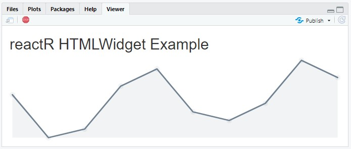

The htmlwidgets package provides a framework for creating R bindings to JavaScript libraries. Using the htmlwidgets package alone, it’s not necessarily straight-forward to create an R binding to a React-powered JavaScript library. The reactR package builds on the htmlwidgets framework to make it much easier to author htmlwidgets that are powered by React. This vignette will show you how to effectively leverage reactR to build an htmlwidgets package that interfaces with react-sparklines React JavaScript library.
Software pre-requisites
In order to develop a reactR widget, you’ll need to install R and optionally RStudio. If you’re on Windows, you should also install Rtools.
For an excellent general introduction to R package concepts, check out the R packages online book.
In addition, you’ll need to install the following JavaScript tools on your machine:
-
Node.js: JavaScript engine and runtime for development outside of browsers. Provides the
node and npm commands.
-
Yarn: Command-line dependency management tool, provides the
yarn command.
To follow along in this vignette, you’ll also need the following R packages:
Scaffolding
To create a new widget you can call scaffoldReactWidget to generate the basic structure and build configuration. This function will:
- Create the .R, .js, .yaml, and .json files required by your widget;
- If provided, take an npm package name and version as a named list with
name and version elements. For example, the npm package foo at version ^1.2.0 would be expressed as list(name = "foo", version = "^1.2.0"). The package, if provided, will be added to the new widget’s package.json as a build dependency.
The following R code will create an R package named sparklines, then provide the templating for creating an htmlwidget powered by the react-sparklines npm package:
Building and installing
Building the JavaScript
The next step is to navigate to the newly-created sparklines project and run the following R commands:
yarn install downloads all of the dependencies listed in package.json and creates a new file, yarn.lock. You should add this file to revision control. It will be updated whenever you change dependencies and run yarn install. Note: you only need to run it after modifying package.json. For further documentation on yarn install, see the yarn documentation.
yarn run webpack compiles the ES2015 JavaScript source file at srcjs/sparklines.js into inst/htmlwidgets/sparklines.js. The later file is one actually used by the R package and includes all the relevant JavaScript dependencies in a version of JavaScript that most browsers understand. Note that, if you add --mode=development to the end of this command, it will include a source map is included with the compiled JavaScript, which makes JavaScript debugging much easier, but hopefully you won’t need to do much of any JavaScript debugging.
yarn run webpack is not strictly a yarn command. In fact, yarn run simply delegates to the webpack program. Webpack’s configuration is generated by scaffoldReactWidget in the file webpack.config.js, but you can always change this configuration and/or modify the yarn run webpack command to suit your needs.
Installing the R package
Now that the widget’s JavaScript is compiled, go ahead and install the R package:
Alternatively, in RStudio, you can use the keyboard shortcuts Ctrl+Shift+D and Ctrl-Shift-B to document and build the package. (On macOS, the shortcuts are Cmd+Shift+D and Cmd+Shift+B)
Run the included demo
Now that the widget’s JavaScript is compiled, and the R package is installed, run app.R to see a demo in action:
Alternatively, in RStudio, you can open app.R and press Ctrl-Shift-Enter (Cmd-Shift-Enter on macOS). You should see something like the following appear in the Viewer pane:

Authoring a React binding
At this point, we’ve built some scaffolding for an htmlwidget powered by React. Let’s modify it to create an interface to the react-sparklines library. Authoring the interface requires some changes on both the JavaScript and R side, but most of the hard thinking will be in figuring how best to design your interface. To give you an example of how this could work, let’s build an interface to the Sparklines component of the react-sparklines library.
First, outline an interface
Note that the examples in this section are just to demonstrate API possibilities and need not be pasted into any file.
Consider the following example taken from the react-sparklines documentation.
import React from 'react';
import { Sparklines } from 'react-sparklines';
<Sparklines data={sampleData}>
<SparklinesLine color="#56b45d" />
<SparklinesSpots style={{ fill: "#56b45d" }} />
</Sparklines>
You have some choice in terms of how to design an R interface to this sort of React library, but usually it makes sense to have one function per component and have the arguments to that function feed into the properties of that React component. In other words, our goal is to create an R function that allows users of our package to recreate this example with the following code:
library(sparklines)
sparklines(
data = sampleData,
sparklinesLine(color = "#56b45d"),
sparklinesSpots(style = list(fill = "#56b45d"))
)
The following sections show how to implement this R interface from our scaffolded widget.
R implementation
Consider the template that reactR::scaffoldReactWidget() provided for us:
sparklines <- function(message, width = NULL, height = NULL, elementId = NULL) {
# describe a React component to send to the browser for rendering.
content <- htmltools::tag("div", list(message))
# create widget
htmlwidgets::createWidget(
name = 'sparklines',
reactR::reactMarkup(content),
width = width,
height = height,
package = 'sparklines',
elementId = elementId
)
}This function is designed to simply display a message within an HTML div using reactR and htmlwidgets. The critical piece here that makes it all work is reactR::reactMarkup(). This function can prepare a payload containing a mix of HTML tags (constructed via htmltools::tag()), React components (constructed via reactR::component()), or character vectors in a such way that the reactR and htmlwidgets toolchain will understand and know how to render in the browser (assuming we’ve imported our React component appropriately, as we cover later). Thus, to send a <Sparklines> react component instead of an HTML <div>, we could simply change:
content <- htmltools::tag("div", list(message))to
Remember, though, that we’d like <Sparklines> to consume a data property and also accept other valid components (e.g., <SparklinesLine>, <SparklinesSpot>, etc) from this library as children. So, we could change the body and signature of sparklines() in the following way:
sparklines <- function(data, ..., width = NULL, height = NULL) {
# describe a React component to send to the browser for rendering.
content <- reactR::component(
"Sparklines",
list(data = data, ...)
)
# create widget
htmlwidgets::createWidget(
name = 'sparklines',
reactR::reactMarkup(content),
width = width,
height = height,
package = 'sparklines'
)
}At this point, we define functions that make it easy for the user to create the other components by adding these to R/sparklines.R
#' @export
sparklinesLine <- function(...) {
reactR::React$SparklinesLine(...)
}
#' @export
sparklinesSpots <- function(...) {
reactR::React$SparklinesSpots(...)
}
JavaScript changes
In order for the reactR toolchain to know how to render components from the ‘react-sparklines’ library, we need to register the React components on the JavaScript side. This can be done in the srcjs/sparklines.js file which currently looks like this:
import { reactWidget } from 'reactR';
reactWidget('sparklines', 'output', {});
First, reactWidget is imported from the 'reactR' JavaScript module. This function will register the React components we want within the reactR and htmlwidgets toolchain. Note that the 'reactR' JavaScript is an html dependency, but webpack is configured in webpack.config.js to consider it a module, so it’s available to us here via import syntax.
Then, there’s a call to reactWidget, and we pass it three arguments:
- The name of the widget (
'sparklines')
- The type of the widget (
'output')
- The React components that should be exposed to the widget. In this template, we didn’t have to include any because it’s just rendering an HTML div.
Instead of passing an empty object ({}) as the React components, we provide an object with all the components we need from the ‘react-sparklines’ module:
import { Sparklines, SparklinesLine, SparklinesSpots } from 'react-sparklines';
import { reactWidget } from 'reactR';
reactWidget('sparklines', 'output', {
Sparklines: Sparklines,
SparklinesLine: SparklinesLine,
SparklinesSpots: SparklinesSpots
});
Go for a spin
Now that we’ve made the necessary changes to the JavaScript and R source code, it’s time to compile the JavaScript and install the R package:
This should open up the sparklines() widget in your browser. If it does, congratulations, you created a React-based htmlwidget!
Shiny integration
The scaffolding template already provides the glue you need to get your reactR widget to render in Shiny. The two relevant functions are renderSparklines() and sparklinesOutput(). You shouldn’t need to modify these functions — they should work out of the box. You will, however, want to modify the example Shiny app in the app.R file:
library(shiny)
library(sparklines)
ui <- fluidPage(
titlePanel("Sparklines library"),
sliderInput("n", label = "Number of samples", min = 2, max = 1000, value = 100),
sparklinesOutput("myWidget")
)
server <- function(input, output, session) {
output$myWidget <- renderSparklines({
sparklines(
rnorm(input$n),
sparklinesLine()
)
})
}
shinyApp(ui, server)Now, when you run shiny::runApp(), you should see your react-based htmlwidget rendering in shiny app!

Further learning
This tutorial walked you through the steps taken you create an R interface to the react-sparklines library. The full example package is accessible at https://github.com/react-R/sparklines-example. Our intention is keep creating example packages under the https://github.com/react-R organization, so head there if you’d like to see other examples of interfacing with React.